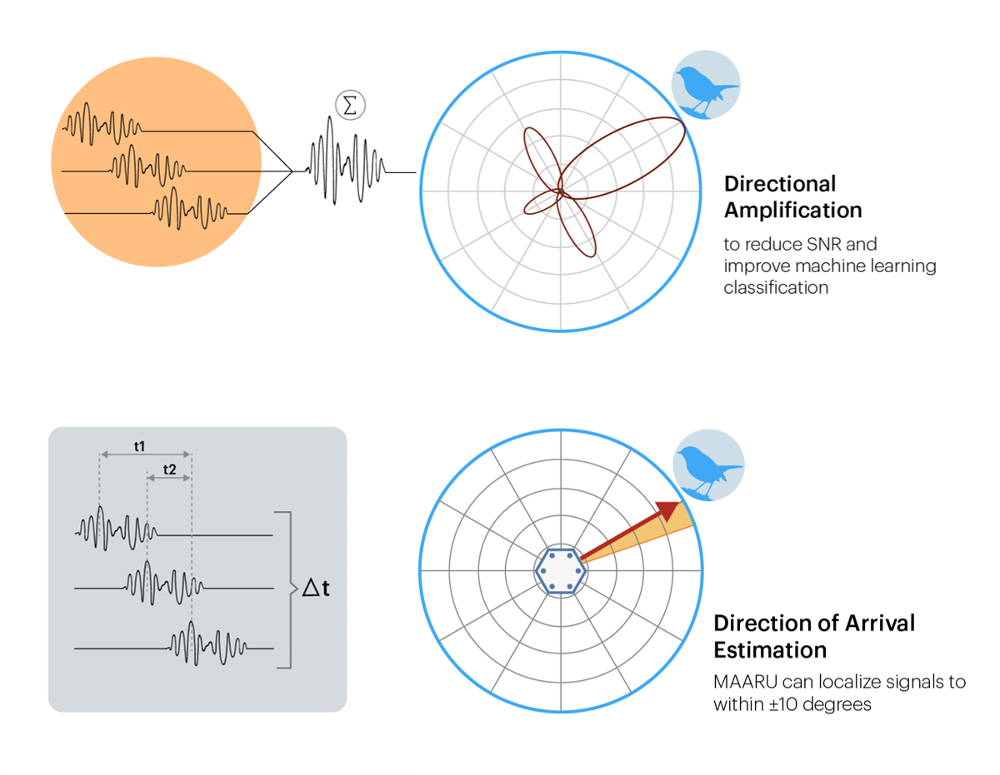

Spatial Acoustics
As vital ecosystems across the globe enter unchartered pressure from climate change industrial land use, understanding the processes driving ecosystem viability has never been more critical. Nuanced ecosystem understanding comes from well-collected and representative field data. Advances in hardware and analytical methods have revolutionised ecological monitoring and made it possible to easily uncover a wealth of information that hasn’t before been possible. Sound ecology (bioacoustics and ecoacoustics) describes the school of research that uses information transmitted through waves of pressure (sound) to infer properties about an# area's species, biodiversity, and health.
Spatial acoustics takes this one step further. By recording a soundwave from multiple microphones simultaneously, we can use millisecond time differences to triangulate where a sound has come from. These delays can also be manipulated to amplify signals from a given direction through a beamforming.
Applications TBC
Spatial acoustics is potentially able to revolutionise the way that soundscapes are recorded, however
it’s uptake in the field has been limited due to the equipment being expensive, inaccessible,
requiring specific expertise, or only being suitable for short term deployments. However, we believe
the MAARU platform is an answer to some of these problems
Find out how to build MAARU here!